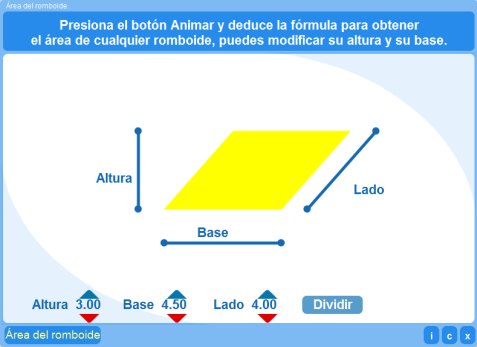
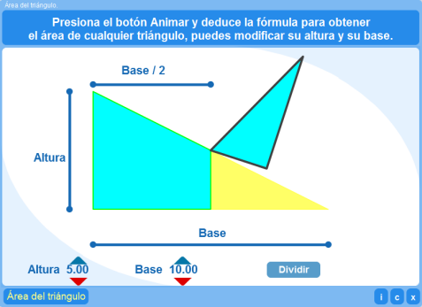
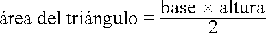
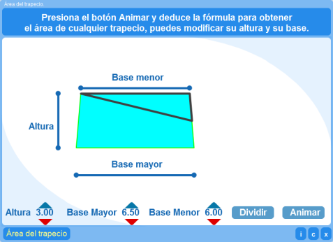
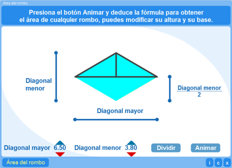

Objetivo
Que los alumnos observen una alternativa para justificar, mediante animaciones, las fórmulas para calcular el área de los romboides, triángulos, trapecios y rombos.
Instrucciones generales
1. Presiona los controles correspondientes a la base y a la altura del triángulo para modificar sus medidas.
2. Presiona el control Dividir para separar la figura en partes.
3. Pulsa el botón Animar. Observa lo que sucede.
4. Presiona el botón Área del triángulo para limpiar pantalla y reiniciar la actividad.
En la parte inferior derecha del interactivo se encuentran los siguientes botones:
| Muestra la documentación del interactivo. | |
| Despliega los créditos correspondientes a este interactivo. | |
| Cierra el interactivo. |
Contenidos
Área del romboide

Esta actividad ayudará a que el alumno conozca un procedimiento para determinar que la fórmula para obtener el área del romboide es:
Área del triángulo

Esta actividad ayudará a que el alumno conozca un procedimiento para determinar que la fórmula para obtener el área del triángulo es:

Área del trapecio

Esta actividad ayudará a que el alumno conozca un procedimiento para determinar que la fórmula para obtener el área del trapecio es:
Área del rombo

Esta actividad ayudará a que el alumno conozca un procedimiento para determinar que la fórmula para obtener el área del rombo es:
| Los materiales aquí presentados utilizan el applet Descartes Web 2.0. | |

|
Los contenidos de esta unidad didáctica están bajo una licencia de Creative Commons. |